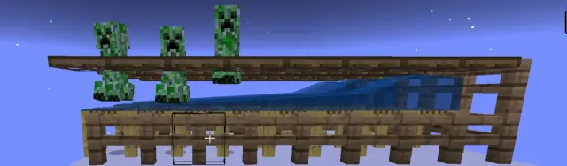
《我的世界》这款游戏中，生物生成是游戏玩法的重要组成部分。了解生物生成机制可以有助于我们建造生物农场，并排除其故障。本文总结了现有的一些资料，可能有不准确之处，欢迎大家指正。
生物的生成和玩家密切相关。举个例子，如果你去距离基地很远的地方挖矿，怪物会生成在你周围的矿洞里，而不会生成在家里。这时，由于玩家距离基地非常远，游戏会卸载基地的区块以降低卡顿。卸载的区块中，农作物不能生长，生物不会运动，生物自然也不会生成。
而如果你使用指令强制加载基地的区块，那么农作物等受随机刻影响的方块会因此生长，农场里的羊也会正常吃草，鸡也会正常下蛋，然而，生物不会因此生成，生物的生成只和玩家有关。
总而言之，生物只能在加载的区块中，距离玩家一定距离内生成和清除。
区块加载、生物的生成和清除与模拟距离有关。模拟距离是控制世界计算范围的设置，在基岩版中可以在游戏外存档设置中修改，网易版不能修改，游戏内不能修改。服务器修改模拟距离可通过server.properties里的tick-distance=[4,12]改变。
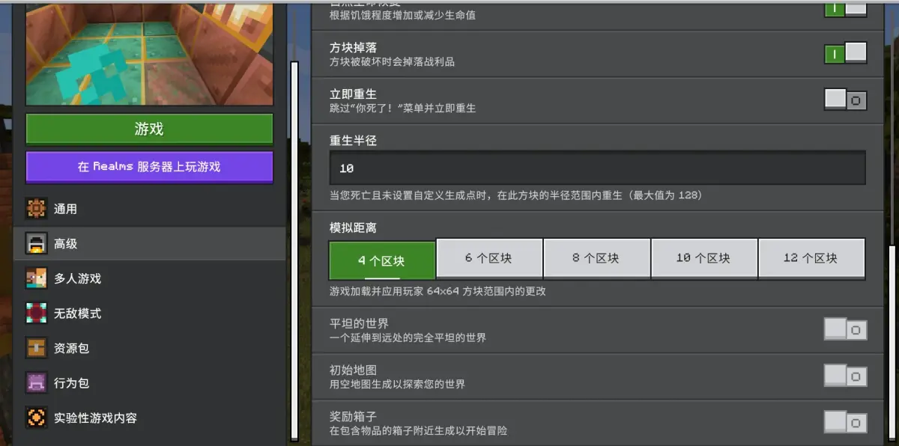
在Minecraft wiki中，模拟距离条目对此有详细叙述。
模拟距离限制了生物生成和清除的最大距离，其范围如下表格。
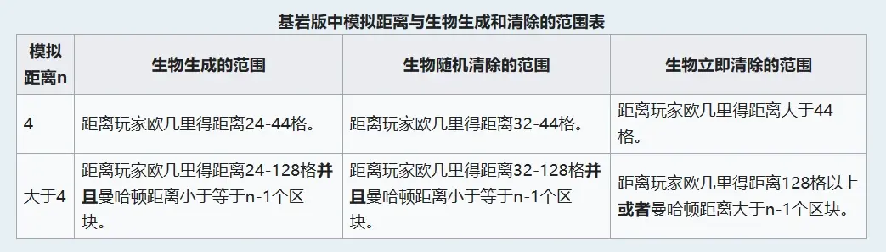
这里我们需要注意的是，模拟距离=4和模拟距离＞4的生物生成和清除范围差别非常大，虽然这对低性能手机和服务器非常友好，但这会造成两种情况下刷怪塔设计有所差异。
例如，如果你的刷怪塔建造在主世界高空中，为避免地面刷怪影响效率，模拟距离=4时你只需从地面向上搭44格以上，模拟距离＞4时你需要从地面向上搭128格以上。如果你的刷怪塔建造在下界，为避免刷怪影响效率，模拟距离=4时你需要清理挂机点为中心半径44的空间，模拟距离＞4时你需要清理挂机点为中心半径128的空间。
具体变化请参考评论区置顶链接
在模拟距离内，每个区块、每一游戏刻有11⁄2000的概率在尝试运行生物生成的算法。
距离玩家超过32格超过30秒，并且在最近30秒内没有受到伤害时，每游戏刻(gametick)有1⁄800的概率被随机清除。
现有的网易中国版，手机端单人游戏模拟距离可以为6或8，服务器、租赁服模拟距离固定为4，且不可修改。
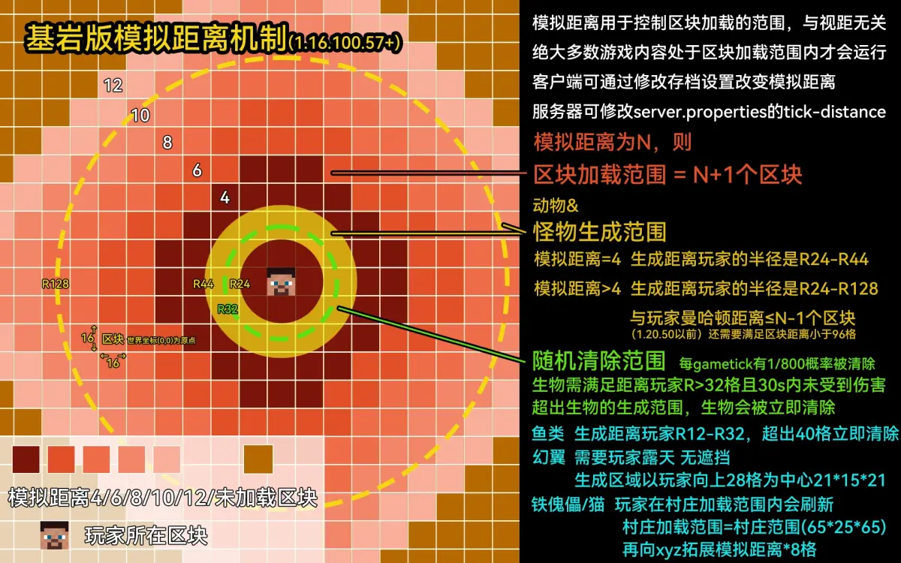
区块的加载范围也由模拟距离n决定。区块加载控制实体和方块的更新，其最大的加载范围距离玩家曼哈顿距离n+1个区块，且与玩家所在区块的X和Z坐标相同的最外侧4个区块不加载。
其他具体内容可直接查阅Minecraft wiki 模拟距离条目，这里不过多解释。
前文提到了一些距离量度，可能有些玩家会感到困惑，因此专门介绍一下。
《我的世界》这款游戏中，常用的距离量度有三种，分别是欧几里得距离、曼哈顿距离和切比雪夫距离，不懂没关系，我会举例说明。
欧几里得距离在二维平面上是圆形范围，三维空间内是球形范围，以模拟距离=4时，怪物生成在距离玩家24-44格为例：
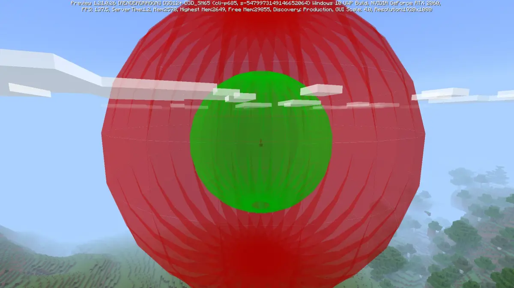
曼哈顿距离在二维平面上类似一个菱形范围，以模拟距离n=6时，怪物生成在距离玩家曼哈顿距离≤n-1个区块为例（曼哈顿距离仅限制区块，三维空间依旧需满足欧氏距离R24-R128）：
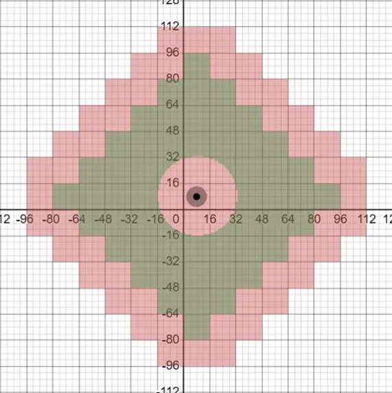
切比雪夫距离在三维平面上类似一个立方体范围，村庄未经扩张时村庄范围为以村庄中心为中心65×25×65格(坐标xyz顺序)，铁傀儡生成范围以村庄中心为中心17×13×17格：
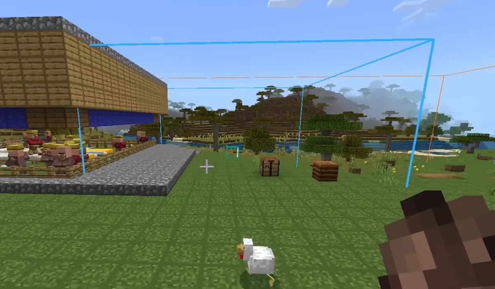
我们只需要记住这三种距离的概念即可，并没有什么特别难的东西。
游戏中生物的生成一般分为自然生成和结构生成。
结构生成指生物作为结构的一部分生成（如掠夺者前哨站、海底神殿、下界要塞、沼泽小屋等），其他所有为自然生成。
在生成条件上，两种生成基本遵守和Java版类似的规则，部分规则有所不同。
在基岩版1.21.0以前，基岩版生物生成在方块的西北角，而非像Java版那样位于方块的中心。
在基岩版1.21.0以后，自然生成的生物生成变为方块的中心，在代码上意味着原坐标xz各+0.49000001。
游戏中每一游戏刻每一区块有11⁄2000的概率运行生成算法，随后更新其种群控制上限，随后Y坐标从上往下遍历可作为生成点的方块，再根据群系和生物权重选择一种生物生成。
注意，接下来的内容可能会更改，本文写于基岩版1.21.0
部分内容摘自Minecraft wiki生成 Minecraft wiki
无论游戏难度或玩家数量如何，自然生成的全局上限总是200。全局上限仅影响自然生成，不影响繁殖、刷怪蛋、命令召唤、刷怪笼或其他种类的生成。只有加载区块内的生物会被纳入全局上限的计算。
除全局生物上限之外，还有种群控制上限，种群控制上限限定了生物的密度。生物生成时，会检测生物当前区块为中心的9×9区块范围内生物数量，其不能超过种群控制上限。这个范围被称作区块密度检测范围。
只要在模拟距离所控制的区块加载范围内（与生物生成范围无关）或通过/tickingarea设置的常加载区域内，已生成的生物就会影响种群控制上限。
种群上限分为截然不同的两类：地表生物上限和洞穴生物上限。洞穴生物不会计入地表生物上限中，反之亦然。决定生物计入哪个上限是其生成时的位置，而非其目前所在的位置。
对于自然生成，Y坐标从上往下遍历到的第一个生成点上方生成的生物（可能生成失败）计入地表上限，其他则计入洞穴上限。结构生成的生物（女巫计入地表上限）和转化的生物永远计入洞穴上限。
截至基岩版1.21.0，生物种群控制上限被分为以下六种：环境生物、动物、怪物、掠夺者、水生生物和猫。其内容被数据驱动，位于行为包/vanilla/spawn_rules中的 "population_control"
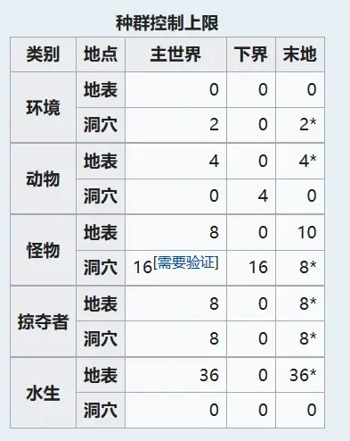
部分生物亦有其自己的密度上限，使其数量略小于种群控制上限。
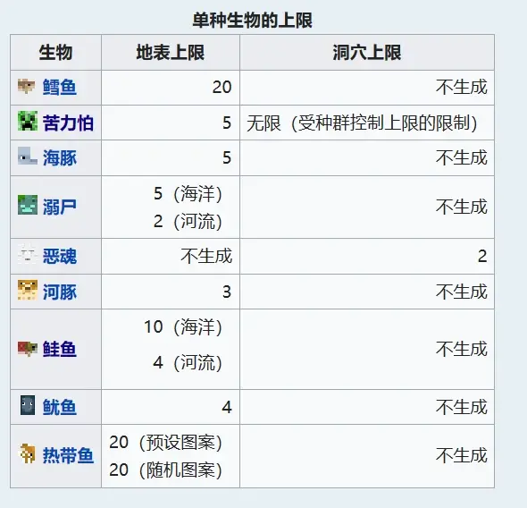
然而，这个机制源于携带版，而携带版的机制并不适合现在的基岩版。因此，在1.20.80后，mojang在vanilla/entities中添加了"spawn_category"。其类似于Java版的生成类别，其生物分类也完全一致。mojang表示目前这个组件不起作用，但是未来将会实装。我们目前（写于1.21.0）不清楚mojang会怎么改，作者我个人推测会修改种群控制上限相关的机制，以更趋近于Java版，因为二者目前是有冲突的。
在Java版中，生物被划分为8种类别，分别为怪物（Monster）、动物（Creature）、环境生物（Ambient）、美西螈（Axolotls）、地下水生生物（Underground Water Creature）、水生生物（Water Creature）、水下环境生物（Water Ambient）和其他（Misc）
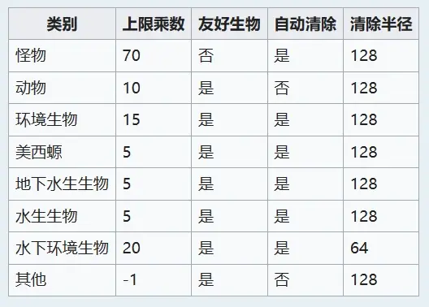
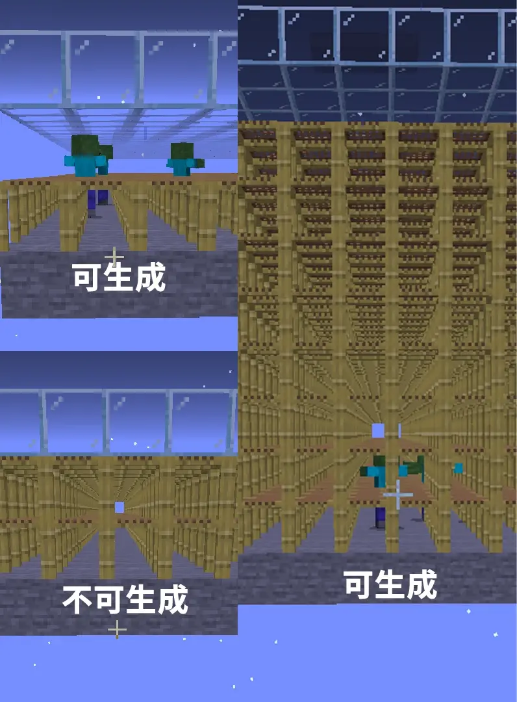
相关内容可查阅离殇之枫 完全不阻碍与部分不阻碍方块汇总及空气类方块简述
除此之外，
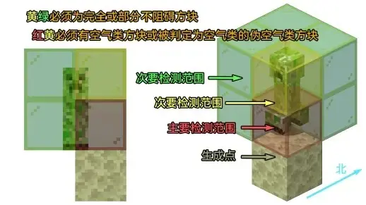
1.21.0以前，如果挤压生物脚部，可能会出现某个方向能挤压生物，某个方向不行的情况，这是因为基岩版的生物生成坐标会有一个很小的偏移，其具体情况如下表：
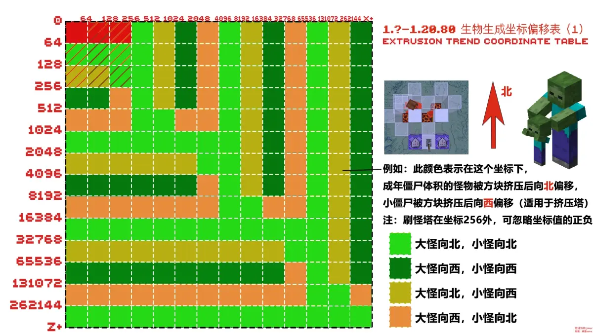
在1.21.0以后，由于自然生成的生物位于方块中心，这导致了生物挤压方向的不规律。但是1.21.0以后利用挤压偏移，通过雪、冰、树叶、玻璃等方块挤压生物落下去成为刚需，因此你还需要这张经验表确定刷怪塔的建造方向。
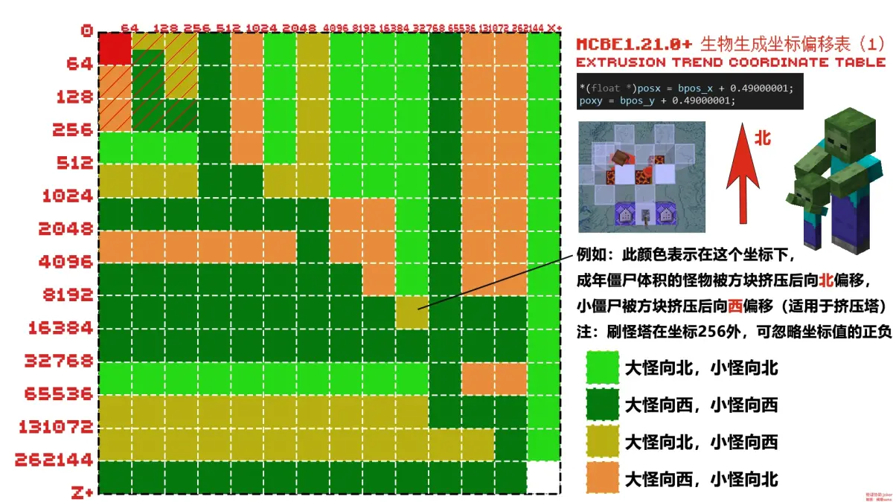
例如，如果你想在X=-500，Z=114514做刷怪塔，查表可知大怪往北挤压，小怪往西挤压。你做不了雪片刷怪塔（怪物挤压方向不一致） 可以做一个玻璃挤压刷怪塔，玻璃需要朝东西方向铺（挤压大怪），小怪用活板门骗寻路掉下去。
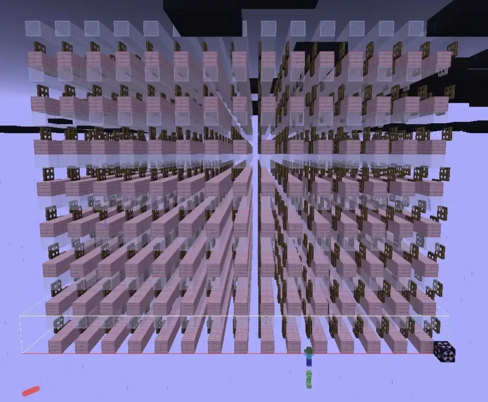
自然生成的生物分为地表生物和洞穴生物。
自然生成首先会更新种群控制上限，接着在被计算的区块内随机选择X和Z坐标，Y坐标通过从世界高度向下搜索找到第一个可进行生成尝试的方块和上方的空气类方块尝试生成生物。
生成算法会将该方块当作地表方块，同时尝试生成一群地表生物，但可能生成失败。
此后，生成算法继续向下搜索至下一个合适的可进行生成尝试，其上方一格完全不阻碍生成的方块。找到满足上述要求的方块后，生成算法会尝试在该方块处生成洞穴生物。洞穴生成会一直持续至Y坐标达到世界底部，并且不会在生成生物后停止。
生成的生物分别计入地表生物上限和洞穴生物上限，参见前文“种群控制上限”部分。
生成生物会按照生成权重生成，其数据都可以在Minecraft wiki生物群系和生成结构相关条目找到。
其位于行为包vanilla/spawn_rules中的"biome_filter"和vanilla/biomes中的"tags"
*在基岩版中，由于河流没有“monster”的tag，所以怪物不能在河流群系生成（这是一个bug）
*沼骸和流浪者也只有地表可以生成，其所在的红树林沼泽、雪原也并不会生成僵尸、骷髅、蜘蛛、苦力怕等怪物。
结构生成以自然生成的生成尝试为基础，游戏会尝试于自然生成的结构中的特定相对X、Z坐标（称为“硬编码生成点”，HSA）进行结构生成。
*这些生成点其实有可能是代码bug，本来应该像Java版一样拥有完整结构范围。
含有HSA的结构目前包括沼泽小屋、海底神殿、掠夺者前哨站和下界要塞。
含有HSA的结构除沼泽小屋生成的女巫（地表生物上限）外均计入洞穴生物上限。
每当含有HSA的区块中进行了一次自然生成尝试，算法亦会尝试进行一次结构生成。注意，此处自然生成指找到可进行生成尝试的方块，即使由于光照或是密度检查等原因而未能生成生物也是如此。
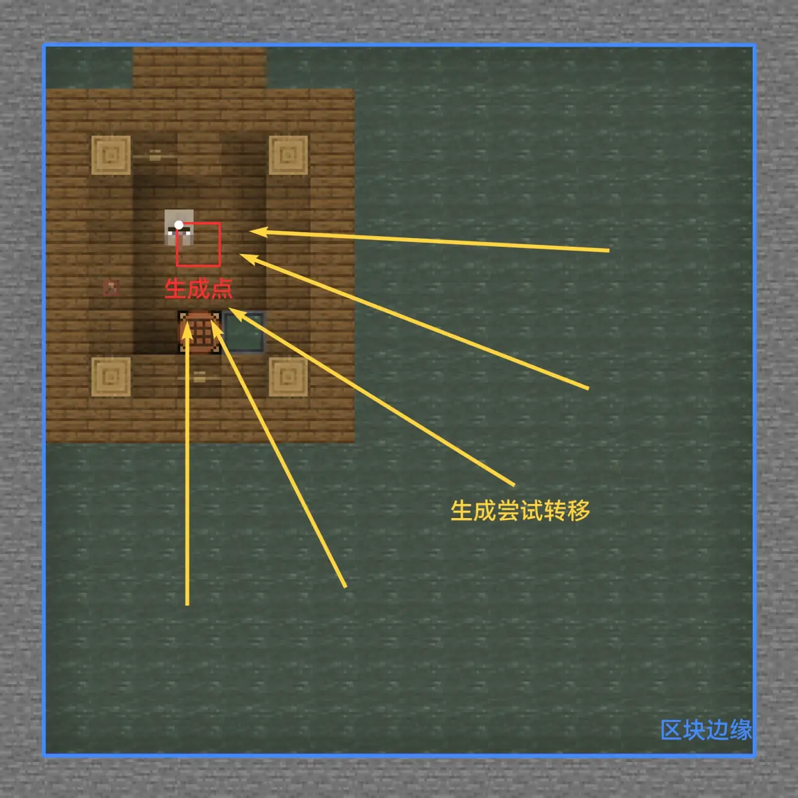
因此如果某个X、Z坐标没有合适的生成点（如仅有空气方块，或所有可生成位置被下半台阶、地毯覆盖等情况），则没有自然生成，亦无法进行结构生成。结构生成遵循和上述自然生成相同的规则和步骤，只有以下不同：
HSA均为于其子结构的中心，除下界要塞的其他三种结构HSA可查询Minecraft wiki找到
（图都是我做的，上传到wiki上）